Data Model for User Directory Application
Table of Contents
- 1. Introduction
- 2. Objective of the Data Model
- 3. Objective of using Alloy
- 4. Requirements
- 5. Operations
- 6. Check And Assertions
- 7. Static Model with Session
- 8. Static Model
1 Introduction
In this application we have made a directory of users and their relation with various entities like name,email and role. Also many operations like add,delete,update,login and logout can be carried out in the application.
2 Objective of the Data Model
The application is abstracted as the data model. The model captures: the entities that comprise the system, relations and constraints between these entities and operations that entail a change in the state of the system.
3 Objective of using Alloy
While building a Data Model for our application we came across many requirements and operations that must be satisfied. For satisfying these requirements and operations we have made many assertions that must hold true. Hence we have used Alloy,a relational modelling language to make a model which satisfies all these assertions.
4 Requirements
The relations between the entities and the the following code in alloy is given below
4.1 Notation
There is a certain notation that is used in Alloy to define relations of the data model.
If A is a set, then
one Adenotes exactly one element ofA.lone Adenotes at most one element ofA.some Adenotes one or more elements ofAset Adenotes zero or more elements ofA.~Adenotes negation ofA.- If
Bis a relation inAthenA.Bis the set of objects connected by relationBinA. A -> Bdenotes a relation fromAtoB.u->u.(State.role) (State.role)=set of Object Role defined in =State= u.(State.role)=set of Object Role defines in =State= but are only related to u u->u.(State.role) is a relation between user and its role
4.2 Definition and declaration
User,Name,Email,Role,Session are the diffrent entities in this
model. There are only 2 types of role possible: Role_Admin and
Role_User.
In alloy we use sig to declare an object(we can also think of it
as a set). Here we need to declare objects called
User,Name,Email,Role,Session(they are like sets) for our
application. Implementation of User
abstract sig User{}
abstract sig Name{}
abstract sig Email{}
abstract sig Session{}
extends Role makes sure that
Role_Admin and Role_User are disjoint sets of Role.
abstract sig Role{}
one sig Role_User,Role_Admin extends Role{}
To do operations on the model we must define State of the
model.Each opeartion then corresponds to change from one state to
another. Objects must be defined inside the state hence we create
a relation between State and the objects using liveUser,
liveName, liveSession and liveEmail.
sig State{
liveUser: set User,
liveName :set Name,
liveEmail :set Email,
liveSession : set Session,
4.3 User
User is main entity in the model. The interaction of a user in the State is defined by the requirements below.
4.3.1 Unique Email
Each user must have one email
email: liveUser -> one liveEmail,
4.3.2 Unique Name
Each user must have one name
name: liveUser -> one liveName,
4.3.3 Multiple Roles
Each user can be admin or user or both
role: liveUser -> some Role,
4.3.4 Multiple Sessions
Each user can be in multiple sessions
session : liveUser -> some liveSession,
4.4 Role
Different privileges for accessing the system is maintained by roles.There are two roles, user and admin
4.4.1 Multiple Users
Each role can be assigned to multiple users.
userOfRole: Role -> set liveUser,
4.4.2 Multiple Sessions
Each role can be assigned to multiple sessions.
roleinSession : Role ->some liveSession,
4.5 Name
Name is one of the properties of a user.
4.5.1 Multiple Users
In our model multiple users can be assigned to a given name.
userOfName: liveName -> some liveUser,
4.6 Email
Email is one of the characteristic properties of a user.
4.6.1 Uniqueness of User
Each email is assigned to only one User.Hence uniqueness of the user can by defined by his email.
userOfEmail: liveEmail ->one liveUser,
4.7 Session
Each login is considered as a session .Each session has a unique user and a unique role.
4.7.1 Unique User
There is only one user in each session.
userofSession: liveSession -> one liveUser,
4.7.2 Unique Role
There is only one role in each session
roleofSession : liveSession -> one Role,
4.8 Update User
Specifically for the update operations we must have additional relations between the objects and the State.
There should be atleast one email in the Email set so that a user can be updated with that email.Similarly for name.
updateName : lone (Name - liveName), updateEmail : lone (Email - liveEmail) }
4.9 Facts
Relations alone wont make our model work precisely hence we need to make some statements which are al
ways true.These are called facts
All the relations should be surjective.It means that, if the user is related to an email, then the email should be
related to the same uesr.
{
role=~userOfRole
name=~userOfName
email=~userOfEmail
session =~userofSession
roleofSession=~roleinSession
}
All the names in the Name set should be either in liveName or updateName sets.Similarly all the emails in Email set
should be in the liveEmail or updateEmail sets.
fact allNameLive{State.liveName+State.updateName = Name}
fact allEmailLive{State.liveEmail+State.updateEmail = Email}
For every session in liveSession set,the role of the Session should be a subset of the set of roles of the user
in that session.
fact sameRoleinSession{ all s :State.liveSession, u: s.(State.userofSession) | s.(State.roleofSession) in u.(State.role) }
For any two sessions in liveSession set,they are related to different users or if they are related to the same user ,
then the role of the user in the two sessions is different.
fact noSameSession{all u:State.liveUser , s1:u.(State.session) ,s2:u.(State.session) |
s1 != s2 implies s1.(State.userofSession) != s2.(State.userofSession) or s1.(State.roleofSession) != s2.(State.roleofSession) }
4.10 Meta Model
meta model showing the relations between different entities in our application.(diagram 1.1)
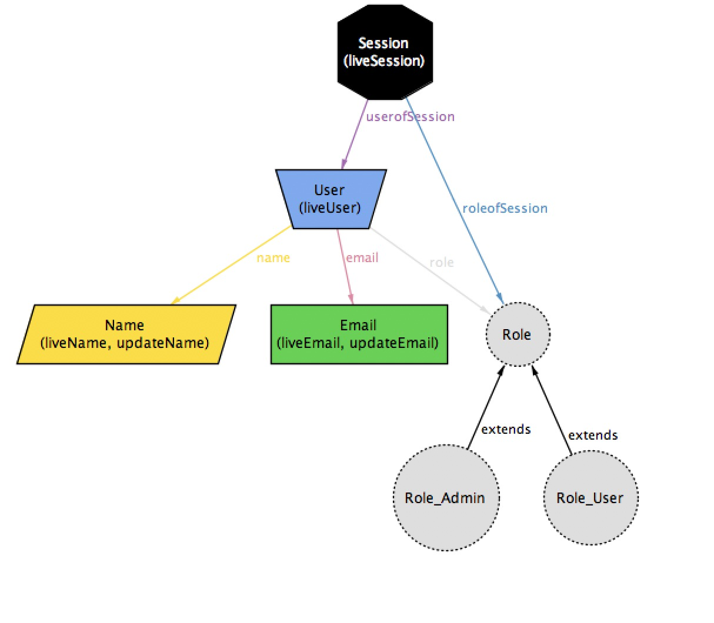 diagram 1.1
5 Operations
CRUD operations are the operations we are gonna use on our model
Each operation is performed on an entity instance or an
entity-set which is the State of the model.
These operation may take additional parameters.
- C create a user
- R read a user
- U update a user
- D delete a user
5.1 Show User
Shows all Users and their relations in the current state.diagram (diagram 1.2 shows the model of the state with users and their relations.)
pred showUsers{}
run showUsers for 4 but exactly 1 State
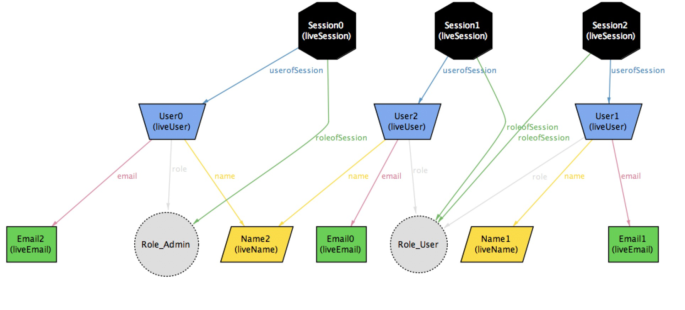 diagram 1.2
5.2 login
Login adds a session to the State and makes a user related to it.
5.2.1 Operation
Here we give the input of 2 states, s is the initial state and s' is the final sate and
the session ses which must be added.
pred login(s,s':State , ses : Session ){
The necessary preconditions that must be satisfied by the state and these will be the
necessary guards on the operation.
The session ses that must be added should be present in the final state after adding the session.
ses in s'.liveSession
Here , we can perform this operation in simple way thinking that if s is the initial state and s' is the
final state ,then login of a user in the final state is same as defining an initial state so that we are logging out the user from final state.
For example, x = y +z is also same as x - z = y i.e, both are the same equations.
Then we make changes in the relations of s' corresponding to s which is like a Engine to the operationns.
- Add a new relation between user and session in final state
s'. - Add a new role for the session in final state
s'. - If the user in the newly created session
sesin final states' is only in one session i.eses,then add a new user tos'. Otherweise,it means that one of the users in some session logged in into another session with another role. - Add the newly created session to liveSession set in final state
s' .
s.userofSession = s'.userofSession - ses -> ses.(s'.userofSession) s.roleofSession = s'.roleofSession - ses -> ses.(s'.roleofSession) #(ses.(s'.userofSession)).(s'.session) = 1=> ( s.liveUser=s'.liveUser - ses.(s'.userofSession) and (#(ses.(s'.userofSession).(s'.name)).(s'.userOfName) = 1 => s.liveName = s'.liveName -ses.(s'.userofSession).(s'.name) else s.liveName = s'.liveName ) ) else s.liveUser=s'.liveUser s.liveSession = s'.liveSession - ses }
5.2.2 Result
Hence we added a session.(diagram 2.1 and 2.2 show the model of the state before and after login of a user.) To run this in alloy, use
run login for 4 but exactly 2 User,exactly 3 Session,exactly 2 State
Before login
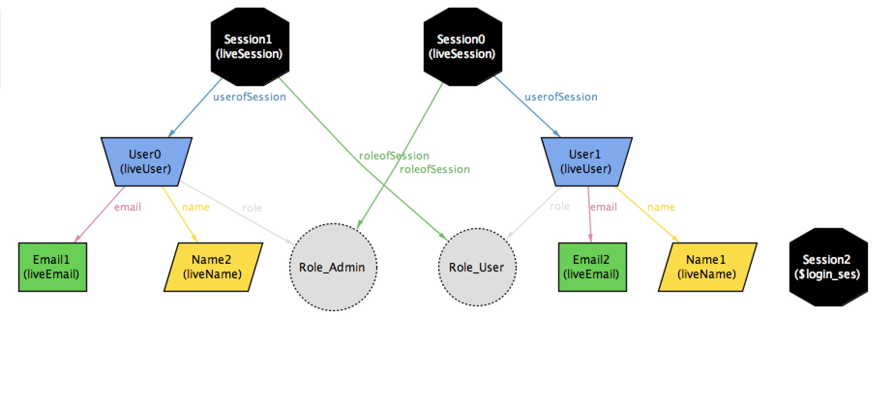 diagram 2.1
After login 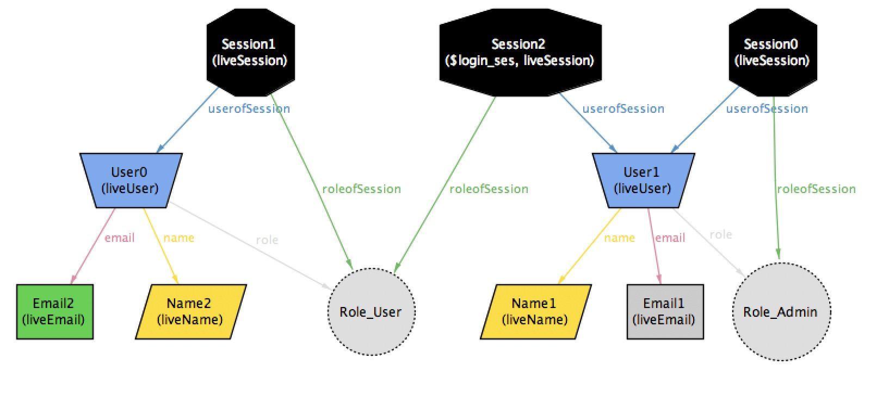 diagram 2.2
5.3 Delete User
Deletes a user from the State along with the Email and Name related to him .
5.3.1 Operation
Here we give the input of the 2 States, s the initial state and s' as the final state
and the user u which must be deleted.
We first check the necessary pre-conditions that must be satisfied by state s and these will be
the necessary gaurds on the operation.
- The user to be deleted should be in the liveUser set of the state
s.
pred deleteUser[s,s':State,u:User]{
u in s.liveUser
#s.updateEmail=0 and #s.updateName=0
s'.updateName = s.updateName
s'.updateEmail = s.updateEmail
Then we make changes in all the relations which would be affected by this operation. This will the Engine of the operation.
- Remove the
namerelation of the user in the final states' . - Remove the
emailrelation of the user in the final states' . - Remove the
rolerelation of the user in the final states' . - Delete the session of the user.
- Delete the email from the
liveEmailset. - If the name is not shared by other users,then delete the name from the
liveNameset. - Delete the user from the
liveUserset in the final states' .
s'.name = s.name - u->u.(s.name) s'.email = s.email - u->u.(s.email) s'.role = s.role - u->u.(s.role) s'.roleofSession = s.roleofSession - u.(s.session) -> (u.(s.session)).(s.roleofSession) s'.session = s.session - u -> u.(s.session) s'.liveEmail = s.liveEmail - u.(s.email) s'.liveSession = s.liveSession - u.(s.session) #(u.(s.name)).(s.userOfName) = 1 => s'.liveName = s.liveName - u.(s.name) else s'.liveName = s.liveName s'.liveUser = s.liveUser - u }
5.3.2 Result
Hence we deleted a user.(diagram 3.1 and 3.2 show the model of the state before and after deletion of a user.) To run this in alloy use
run deleteUser for 4 but exactly 4 User,exactly 4 Name,exactly 2 State run deleteUser for 4 but exactly 4 User,exactly 1 Name,exactly 2 State
Before User is deleted
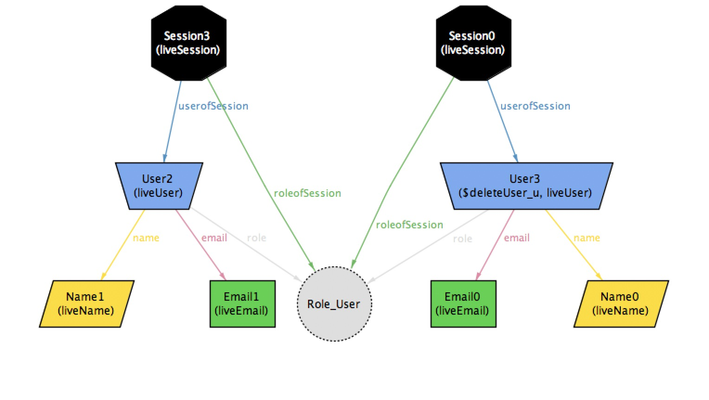 diagram 3.1
After User is deleted
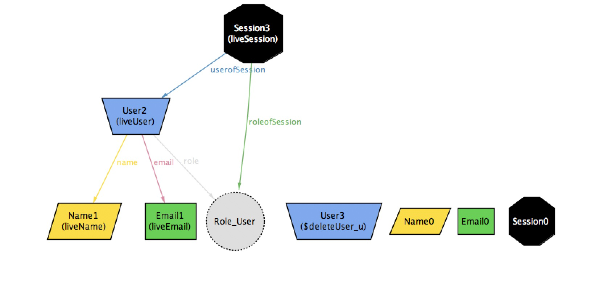 diagram 3.2
5.4 Add User
A user is added with the default role user or admin.
Added a user to the State along with the Email, Name and Role related to him .
5.4.1 Operation
Here we give the input of the 2 States, s the initial state and s' as the final state
and the user u which must be added.
Here , we can perform this operation in simple way thinking that if s is the initial state and s' is the
final state ,then adding a user to the final state is same as defining an initial state so that we are deleting a user from final state.
For example, x = y +z is also same as x - z = y i.e, both are the same equations.
We first check the necessary pre-conditions that must be satisfied by state s and these will be
the necessary gaurds on the operation.
- The user to be added should be present in the
liveUserset of the final states' .
pred addUser[s,s':State,u:User,r:Role]{
u in s'.liveUser
r in u.(s'.role)
#s'.updateEmail=0 and #s'.updateName=0
s'.updateName = s.updateName
s'.updateEmail = s.updateEmail
Then we make changes in all the relations of s'= corresponding to =s which would be affected by this operation.
This will the Engine of the operation.
- Add the relation
nameto the user in the final states' . - Add the relation
emailto the user in the final states' . - Add the relation
roleto the user in the final states' . - Add the role to the session.
- Add email to the
liveEmailset . - Add session to the
liveSessionset. - If the name is not present in the
liveNameset, add it. - Add the user to the
liveUserset.
s.name = s'.name - u->u.(s'.name) s.email = s'.email - u->u.(s'.email) s.role = s'.role - u->u.(s'.role) s.roleofSession = s'.roleofSession - u.(s'.session) -> (u.(s'.session)).(s'.roleofSession) s.session = s'.session - u -> u.(s'.session) s.liveEmail = s'.liveEmail - u.(s'.email) s.liveSession = s'.liveSession - u.(s'.session) #(u.(s.name)).(s.userOfName) = 1 => s.liveName = s'.liveName - u.(s'.name) else s.liveName = s'.liveName s.liveUser = s'.liveUser - u }
5.4.2 Result
Hence we added a user.(diagram 4.1 and 4.2 show the model of the state before and after addition of the user) To run this in alloy use
run addUser for 4 but exactly 2 State
Before User is added
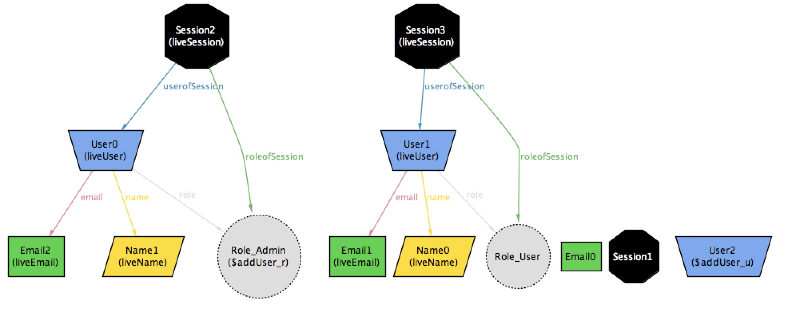 diagram 4.1
After User is added
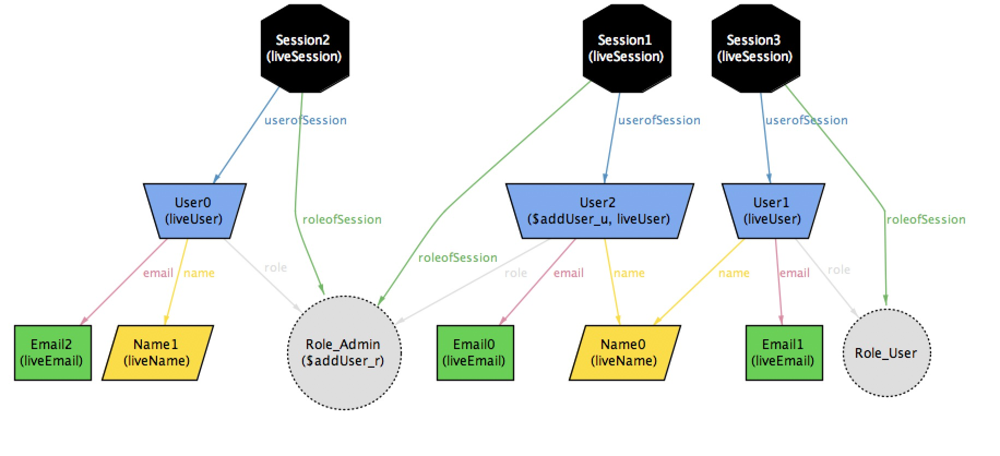 diagram 4.2
5.5 Update User
Updates the email or name of the given user.
A user is updated with updateEmail or updateName or both.
5.5.1 Operation
Here we give the input of the 2 States, s the initial state and s' as the final state
and the user u which must be added.
We first check the necessary pre-conditions that must be satisfied by state s and these will be
the necessary gaurds on the operation.
- The
updateNameorupdateEmailset should be atleast one to make an update to the user. - The role , session and role in the session should be the same before and after the update.
pred updateUser[s,s':State,u:User]{
u in s.liveUser and s.liveUser= s'.liveUser
#s.updateName=1 or #s.updateEmail=1
s'.role = s.role
s'.session = s.session
s'.roleofSession = s.roleofSession
Then we make changes in all the relations of s' corresponding to s which would be affected by this operation.
This will the Engine of the operation.
- If
updateNameset has one name element, then add the name to the user and delete the previous name of the user.Also add the new name to theliveNameset and delete the previous name from the set. - Similarly with
updateEmail.
#s.updateName=1 =>
s'.name = s.name + u->s.updateName - u->u.(s.name)
and s'.updateName = u.(s.name)
and s'.liveName = s.liveName + s.updateName - u.(s.name)
else s'.name = s.name
and s'.updateName=s.updateName
and s'.liveName = s.liveName
#s.updateEmail =1 =>
s'.email = s.email + u->s.updateEmail - u->u.(s.email)
and s'.updateEmail = u.(s.email)
and s'.liveEmail = s.liveEmail + s.updateEmail - u.(s.email)
else s'.email = s.email
and s'.updateEmail=s.updateEmail
and s'.liveEmail = s.liveEmail
}
5.5.2 Result
Hence we updated the email or name of the user.(Diagram 5.1 amd 5.2 show the model of the state before and after updating the user.) To run this in alloy use
run updateUser for 4 but exactly 2 User,exactly 2 State
Before updating User
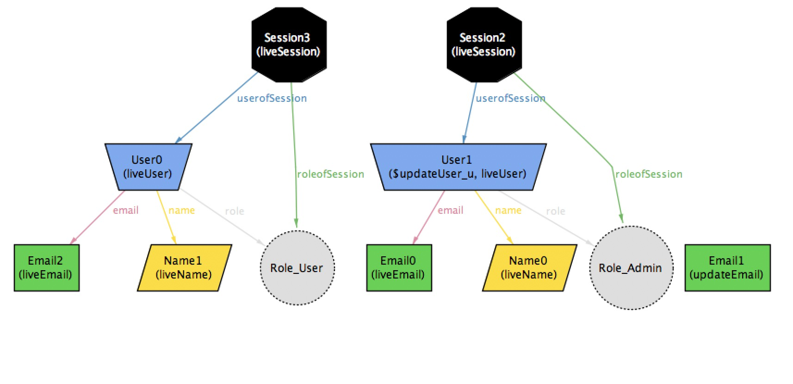 diagram 5.1
After updating User
 diagram 5.2
diagram 5.2
5.6 Logout
Dletes a session from the State.If the user related to the deleted session is in any of the other sessions, then the user is not removed from the state, Else the user along with his relation such as Email,Name(If no other user in the state has its name as this one) are also removed.
5.6.1 Operation
Here we give the input of two states, s is the initial state and s' is the final state
and the session ses that is to be deleted.
We first check the necessary pre-conditions that must be satisfied by state s and these will be
the necessary gaurds on the operation.
- The session
sesshould be present in the set ofliveSessionin the initial states.
pred logout(s,s':State , ses : Session ){
ses in s.liveSession
Then we make changes in all the relations which would be affected by this operation. This will the Engine of the operation.
- Remove the relation between user and role of the session in the final sate
s' . - If the user is also not present in other sessions, then remove the user,name of the user from their respective sets in the final state
s' . - Remove the session from the
liveSessionset .
s'.userofSession = s.userofSession - ses -> ses.(s.userofSession)
s'.roleofSession = s.roleofSession - ses -> ses.(s.roleofSession)
#(ses.(s.userofSession)).(s.session) = 1=> ( s'.liveUser=s.liveUser - ses.(s.userofSession)
and (#(ses.(s.userofSession).(s.name)).(s.userOfName) = 1 =>
s'.liveName = s.liveName -ses.(s.userofSession).(s.name)
else
s'.liveName = s.liveName ) )
else s'.liveUser=s.liveUser
s'.liveSession = s.liveSession - ses
}
5.6.2 Result
Hence we deleted a session.(diagram 6.1 and 6.2 show the model of the state before and after loggin out) To run this in alloy , use
run logout for 4 but exactly 2 User,exactly 3 Session,exactly 2 State
Before logout 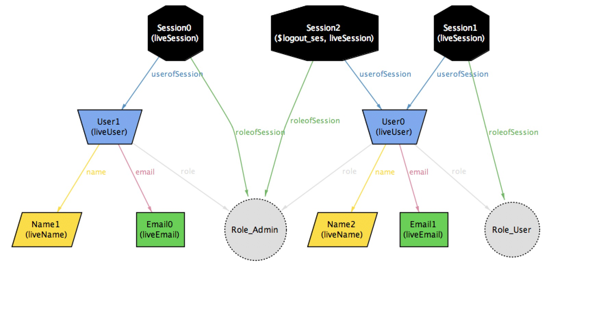 diagram 6.1
After logout 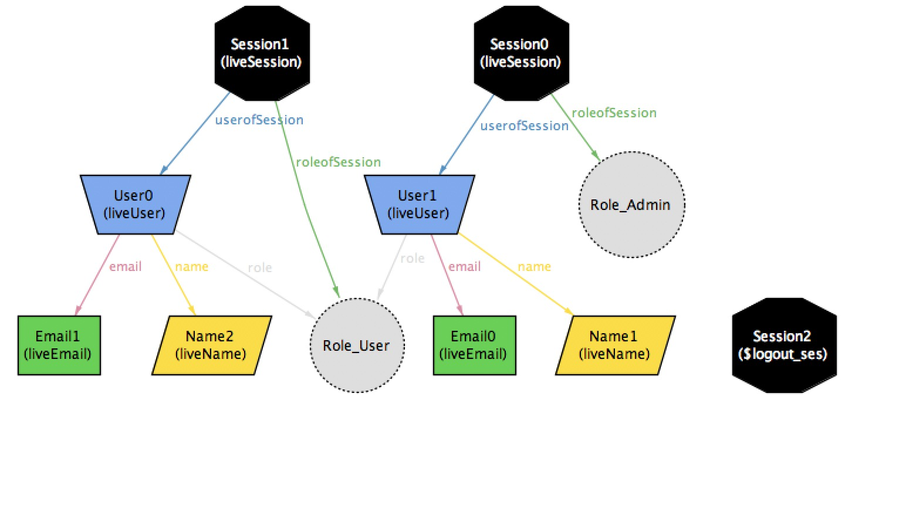 diagram 6.2
6 Check And Assertions
Now that we have a Data Model we must keep specific tests that it must pass to check whether the model satisfies the our requirement
6.1 Assertions
1.If 2 Users have same email then both the users must be same.(True)
assert userSameEmail {all u,u':User|u.(State.email)=u'.(State.email) => u=u'}
check userSameEmail for 4 but exactly 1 State
No Counter Example found.
2.If 2 Users have same name then both the users must be same.(False) (refer diagram 2.1 for counterexample)
assert userSameName {all u,u':User|u.(State.name)=u'.(State.name) => u=u'}
check userSameName for 4 but exactly 1 State
Counterexample
./diagrams/userSameName.jpg diagram 2.1
{kind=link}
3.Any User can be deleted.(True)
deleteOkay: check {all s,s':State,u:User | deleteUser[s,s',u] => s'.liveUser = s.liveUser -u }
No Counter Example found.
4.Updating only Email of a User. 4.1 Name might update.(False) (view diagram 2.2.1 and 2.2.2 for counterexample which shows the model of the state before and after updating.)
assert updateEmail {all u:User,s,s':State | updateUser[s,s',u] => u.(s.email) != u.(s'.email) }
check updateEmail for 5 but exactly 2 State
Counterexample - Name is changed and Email is not changed Before
diagram 2.2.1
After
diagram 2.2.2
4.2 Name doesn't update.(True)
assert updateEmailOnly {all u:User,s,s':State | no s.updateName and updateUser[s,s',u] => u.(s.email) != u.(s'.email) }
check updateEmailOnly for 5 but exactly 2 State
No Couter Example found.
7 Static Model with Session
- In this model we have approached data-modeling with the perspective of OOP
- Where every objects has fields with each having relations defined in the Universal Set
- But without any constrains
//This is an Object Oriented Relational Model formed of the web app short course
//Before this no object in this model had any relations defined in them but now
//because we see it from an object oriented perspective we find many changes in our model
//Advantage Of using this model
//1.This gives a better outlook with the real world objects (Less towards the data-base side)
//2.As relations are prefined we can have more than one model in the same universe
//Universal Set contains the following
abstract sig User{
name:lone Name,
email:lone Email,
role:set Role,
session:lone Session
}
abstract sig Name{
userOfName:set User
}
abstract sig Email{
userOfEmail:lone User
}
abstract sig Session{
userInSession:lone User,
roleInSession:lone Role
}
abstract sig Role{
userOfRole:set User,
sessionOfRole:set Session}
one sig Role_User,Role_Admin extends Role{}
//Bijective relations between Objects
fact {
role=~userOfRole
name=~userOfName
email=~userOfEmail
session =~userInSession
roleInSession=~sessionOfRole
}
//Role and Session to be correctly Mapped
fact PossibleRolesInSession {all s:State,logged:Session,u:User |
u in s.liveUser and logged in s.liveSession and u in logged.userInSession =>
u.role = logged.roleInSession}
sig State{
liveUser: set User,
liveName :set Name,
liveEmail :set Email,
liveRole: set Role,
liveSession : set Session,
}
// Cardinality constrains in the specific state
fact {all u:User | u in State.liveUser =>one u.email }
fact {all u:User | u in State.liveUser =>one u.name }
fact {all u:User | u in State.liveUser =>some u.role }
fact {all e:Email | e in State.liveEmail => one e.userOfEmail }
fact {all n:Name | n in State.liveName => one n.userOfName }
fact {all logged:Session | logged in State.liveSession => one logged.userInSession and one logged.roleInSession }
//all relations inside the State only
fact { all u:User,n:Name,s:State| n in u.name => u in s.liveUser and n in s.liveName}
fact { all u:User,e:Email,s:State| e in u.email => u in s.liveUser and e in s.liveEmail}
fact { all u:User,r:Role,s:State| r in u.role => u in s.liveUser and r in s.liveRole}
fact { all u:User,logged:Session,s:State| logged in u.session => u in s.liveUser and logged in s.liveSession}
fact { all r:Role,logged:Session,s:State| r in logged.roleInSession => r in s.liveRole and logged in s.liveSession}
pred show{}
run show for 4 but exactly 1 State, exactly 3 User,exactly 2 Email,exactly 4 Name,exactly 2 Session
8 Static Model
// This is a Static Data Model for the web-app-short-course in Alloy.
// It contains a User and its relations with Name,Email,Role,Session(which can be admin,user only).
// Using the State Object we can see diffrent state of the web-app when diffrent operations are applied on it
module webAppShortCourse
// The Objects in the model
abstract sig User{
role :some Role,
name:one Name,
email:one Email
}
abstract sig Name{
userOfName:some User
}
abstract sig Email{
userOfEmail:one User
}
abstract sig Role{
userOfRole:set User
}
//The diffrent role of Users
one sig Role_User,Role_Admin extends Role{
}
fact { name=~userOfName }
fact {name=~userOfName}
fact {email=~userOfEmail}
run {} for 1 but exactly 1 User
run {} for 2 but exactly 2 User
//State of the Model
sig State{
//Users present in the current State
live: set User,
//Relations with other Objects
role: live-> some Role,
userOfRole: Role -> set live,
name: live -> one Name,
userOfName: Name -> some live,
email: live -> one Email,
userOfEmail: Email -> one live
}
{
role=~userOfRole
name=~userOfName
email=~userOfEmail
//roleInSession in userInSession.role
}
//fact atleastOneAdmin { all r:Role_Admin| some u:User| r in u.role }
assert atleastOneAdmin { all r:Role_Admin| some u:User| r in u.role }
check atleastOneAdmin for 4 but exactly 2 User,exactly 1 State
assert alteastOneUser {some u:User |#u > 0}
check alteastOneUser for 1